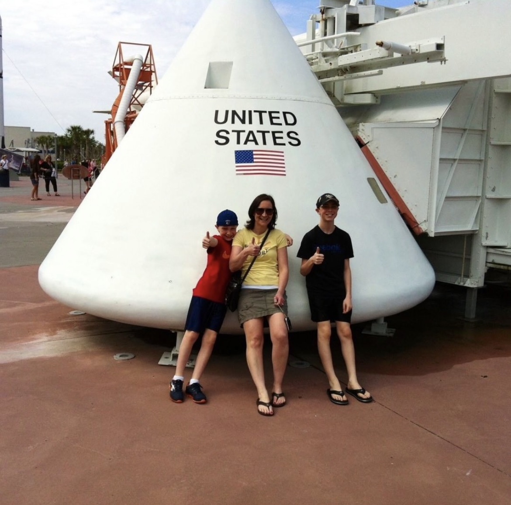

In 6th grade, I experienced my first lesson is astronomy by a teacher I remember fondly, Mrs. Chamot, learning about the formation of the Earth, the orbits of planets in the Solar System, Mars Curiosity rover and why Pluto was downgraded to a dwarf planet (sadly). From there, I developed a deep passion for the space sciences, which eventually led to an interest in engineering and, with continued support from those around me, my current predicament: a love for software engineeeing.
Now, I am in the process of getting my degree in Computer Science, studying at Carleton University in Ottawa, Ontario. I'm goining into my third year, and enjoy contributing to the school rocketry team. In terms of work, I'm on the hunt for internships, but I do work part-time for the school as a Tour Guide. My interests are in backend web development and embedded systems.
Outside of school and work, I enjoy many hobbies, like: cooking and baking, programming and robots, reading, hiking and biking.
As it stands, I am most proficient in: